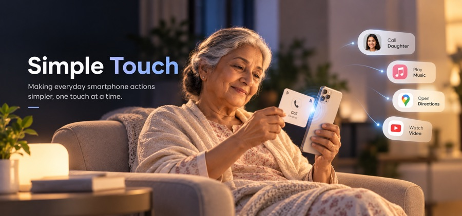
Every memory Connects to
a simpler tomorrow
Overview
OneTap is a simple physical interface designed to help older adults access everyday digital actions without navigating a complex smartphone.
Using familiar photographs and objects with NFC, a simple tap can trigger actions such as calling a doctor or family member, starting a video call, playing music, or opening digital content.
By turning familiar physical objects into simple touch points, OneTap makes everyday technology easier to access, understand, and use.
My Role
I worked across the end-to-end design process—from user research and problem definition to concept development, interaction design, physical prototyping and service design. I explored how familiar physical interactions and NFC could reduce digital complexity and support greater independence for older adults.
Target audiance
Older adults aged 60 and above
6-step Design process
Understand the users, context and problem.
- Primary research
- User Interviews
- Surveys
- Observations
- Secondary research
- Research Findings
Turn research findings into a clear design problem.
- Pain points
- Affinity Mapping
- Personas
- Empathy Map
- Problem statement
Ideate different ways to reduce digital complexity.
- Ideation
- Brainstorming
- Interaction concepts
- Physical-digital opportunities
Turn the strongest idea into the Phonoframes experience.
- NFC interaction
- Product concept
- Interaction model
Build and experience the idea in the physical world.
- Physical prototypes
- NFC prototype
- User scenarios
- Interaction flows
Secondary research
We reviewed existing research on smartphone usage and digital-platform adoption among older adults in India to understand their common behaviours, familiarity, and challenges.
Commonly used mobile apps among older adults
(in % of users)
Awareness of common interface controls (in % of users)
User Research
In Depth Interview & survey
10+
We spoke with older adults to understand their daily challenges with smartphones and technology.
100s
Surveys helped identify common technology habits, challenges, and support needs.
We wanted to understand one thing
What makes everyday technology difficult for older adults—and where do they need the most help?
Basic tasks like changing volume, setting alarms, opening apps or watching videos can be difficult.
Most older adults who struggle with digital devices depend on someone to help them.
Children and grandchildren are often the first people they turn to when they get stuck.
What we found, here's the
Research Findings
- Older adults often rely on family members when they struggle to complete everyday technology tasks.
- Users respond better to things they already recognize.
- Multiple options, unfamiliar icons and navigation steps can make simple digital tasks feel overwhelming.
- Users respond better to things they already recognize.
The challenge wasn't access to technology—it was using it independently. Many older adults struggle with apps, accounts, calls, videos, and everyday smartphone tasks.
Research Synthesis
Affinity Mapping
We grouped key observations from user interviews with older adults to identify common patterns, uncover their needs, and derive meaningful insights.
Research participants:
6 participants · Age 60–78
Familiar Activities are Easier
I mainly use my phone to call my daughter
WhatsApp is easy because I use it daily
I enjoy looking at family photos
I use YouTube to watch videos
I mainly use my phone to call my daughter
Familiarity builds confidence and independence in using smartphones.
Navigation & Discoverability
I don't know where settings are
I get confused when there are too many options
I sometimes forget how I reached a screen
I don't like if buttons are hidden
Unfamiliar navigation and hidden controls create friction.
Discovering or remembering unfamiliar navigation can cause confusion and hesitation.
Family Support is Important
My granddaughter sets up most of the apps for me
I sometimes ask my son to help
I feel more confident when someone shows me in person
I take help from my children
Many rely on family members for setup or unfamiliar features
Family support plays a key role in overcoming unfamiliar interactions
Predictable Interactions
I like simple and clear buttons
I prefer fewer steps
A simple tap or button would be easier
I prefer physical reminders
Users value simple, predictable, and obvious interactions
Simple, clear and physically recognizable cues can make digital actions easier
Fictional Character
User Persona
Ramesh uses a smartphone to stay connected with his family and for simple entertainment. He is willing to learn and tries to use the phone independently, but struggles when everyday tasks involve multiple steps or unfamiliar options.
Goals
- Call his daughter easily
- Listen to his favourite songs
- Set alarms and reminders
- View family photos and videos
- Use his phone without depending on others
Pain Points
- Finds multi-step tasks confusing
- Struggles to find features and settings
- Gets confused by unfamiliar icons
- Needs help with tasks he doesn't use regularly
- Often asks his children when he gets stuck
Needs
- Simple, step-by-step interactions.
- Fewer steps for common tasks.
- Clear and familiar controls.
- Ability to complete tasks independently.
Meena uses her phone to communicate with family, share photos, watch videos and manage everyday activities. She understands the basics but avoids features when they feel complicated or unfamiliar.
Pain Points
- Struggles to remember where specific features
- Finds navigation tiring with too many choices.
- Depends on family when something go wrong.
- Prefers familiar ways of doing things.
Needs
- Clear and recognizable interactions.
- Direct access to frequently used actions.
- Confidence that she won't make a mistake.
- A simple way to stay connected with family.
Understanding User Needs
Empathy Map
- I know what I want to do, but I don't know where to find it.
- I usually ask my children when I get stuck.
- Why does such a simple task need so many steps?
- What if I press the wrong thing?
- Tries to complete common tasks on the phone.
- Repeats familiar actions and asks family for help when stuck.
- Frustrated when unable to complete a simple task.
- Dependent when needing help from family.
User point of view
Pain Points
From our interviews and observations, we identified key pain points that make certain smartphone interactions difficult or frustrating for older adults.
Research participants:
6 participants · Age 60–78
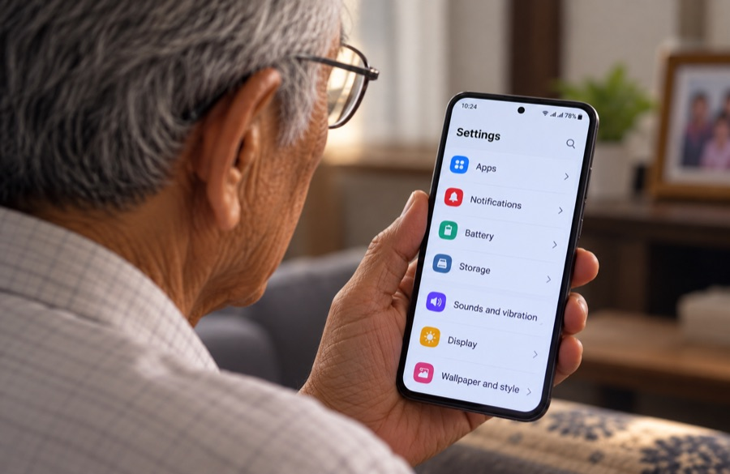
Difficulty finding features
"I don't know where some settings are"
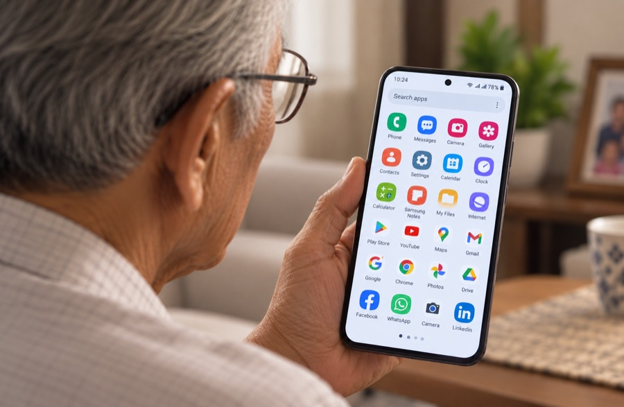
Too many options
"I get confused when there are too many options"
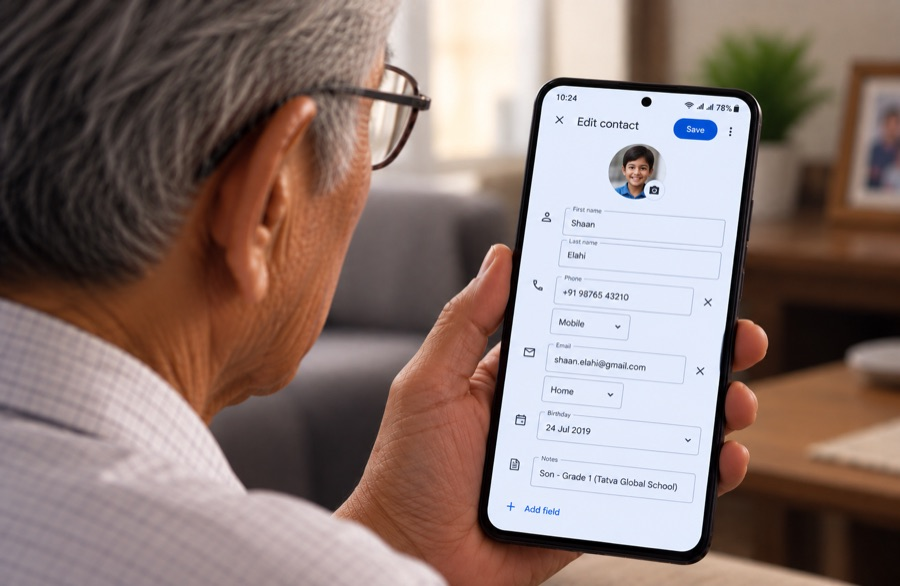
Forgetting navigation steps
"I sometimes forget how I reached a screen"
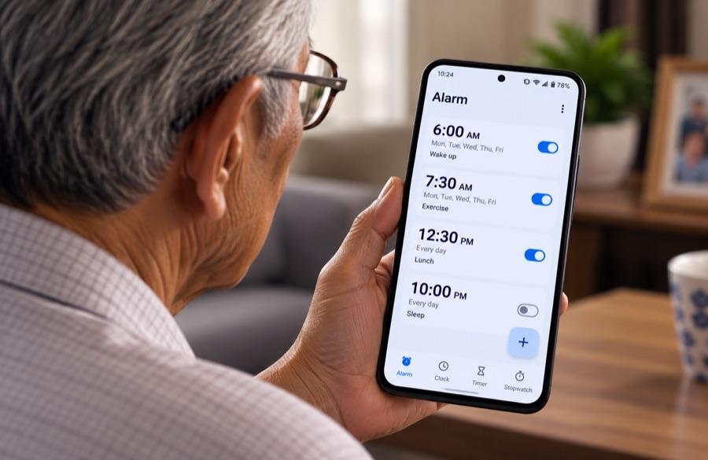
Hidden or unclear buttons
"I don't like when buttons are hidden"
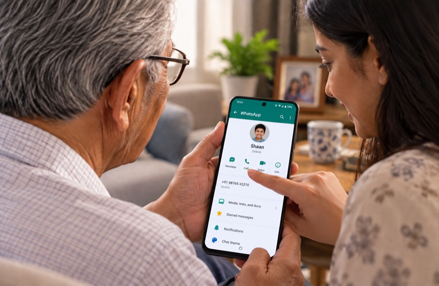
Reliance on family support
"My granddaughter sets up most of the apps for me"
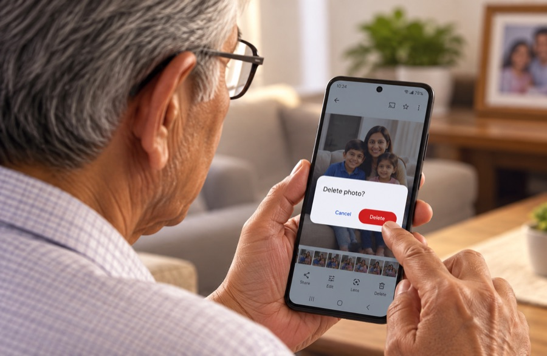
Concerns making mistakes
"I feel nervous when I might accidentally delete something"
Preference for simplicity
"I prefer simple and clear buttons"
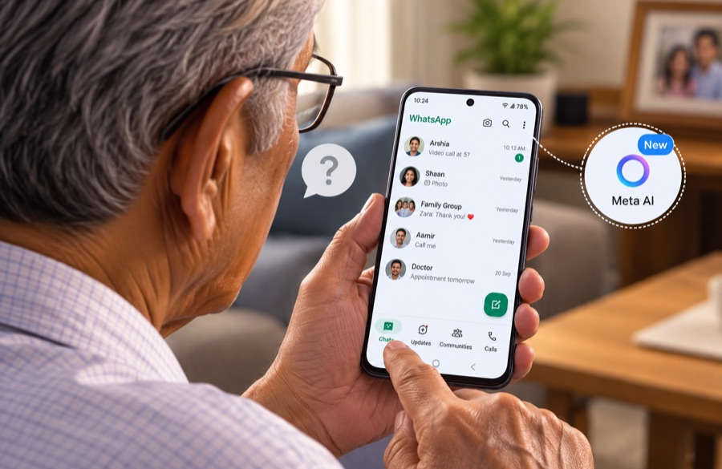
Limited awareness of features
"I don't usually explore new features on my own"
Define
Problem & Solution
Older adults can use smartphones, but everyday tasks become difficult when they require remembering multiple steps, navigating unfamiliar options, or knowing what to do next. This can lead to hesitation and dependence on family members.
Phonoframes turns familiar photographs into simple shortcuts. An NFC-enabled frame connects a physical photo to a predefined digital action, allowing users to access it with a simple touch.
IDEATION
Exploring many ideas to solve the problem
We explored multiple physical and digital concepts to help older adults access frequently used digital services in a simple, familiar and intuitive way. These ideas were explored through brainstorming, sketches and quick prototypes.
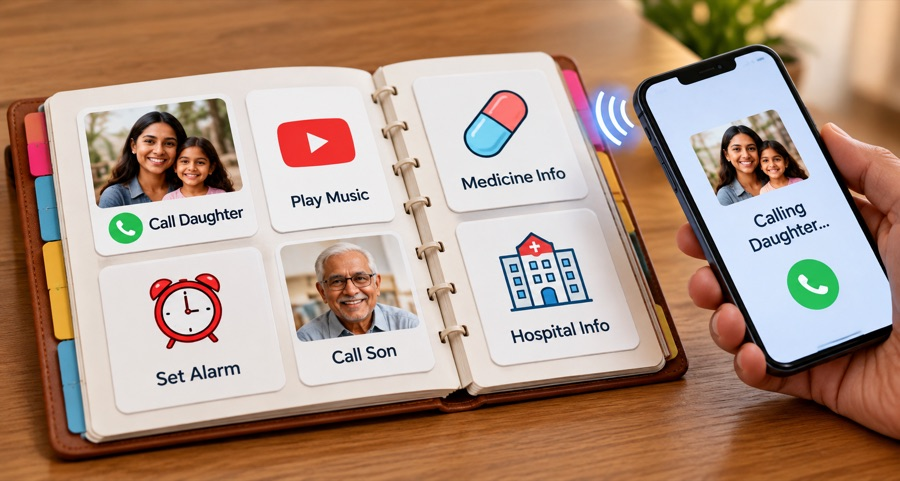
01 NFC Memory Book
- Familiar and easy to understand
- Supports multiple actions
- Easy to personalize with family photos
- Works without navigating an app
- Need to carry the book
- Pages can wear over time
- Initial setup required
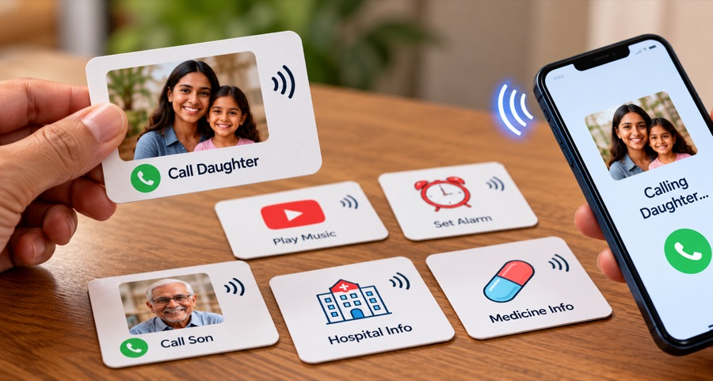
02 NFC Cards
- Portable and flexible
- Can be kept in a wallet/purse
- Easy to replace or update
- Good for specific actions
- Cards can be lost
- Need to manage multiple cards
- Less contextual than a book
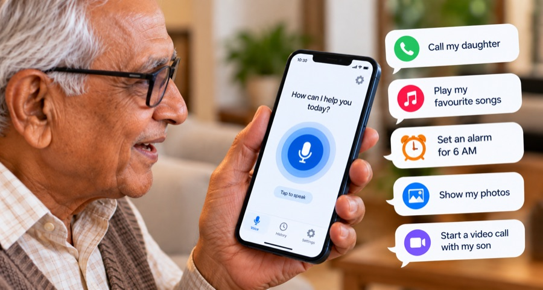
03 Voice Assistant
- Hands-free and natural
- Useful for multiple tasks
- Good for visually impaired users
- Can work across the home
- May not work in noisy environments
- Speech recognition can be difficult
- Requires learning and trust
- Regional accent issues
Winner option
NFC Memory Book / Cards
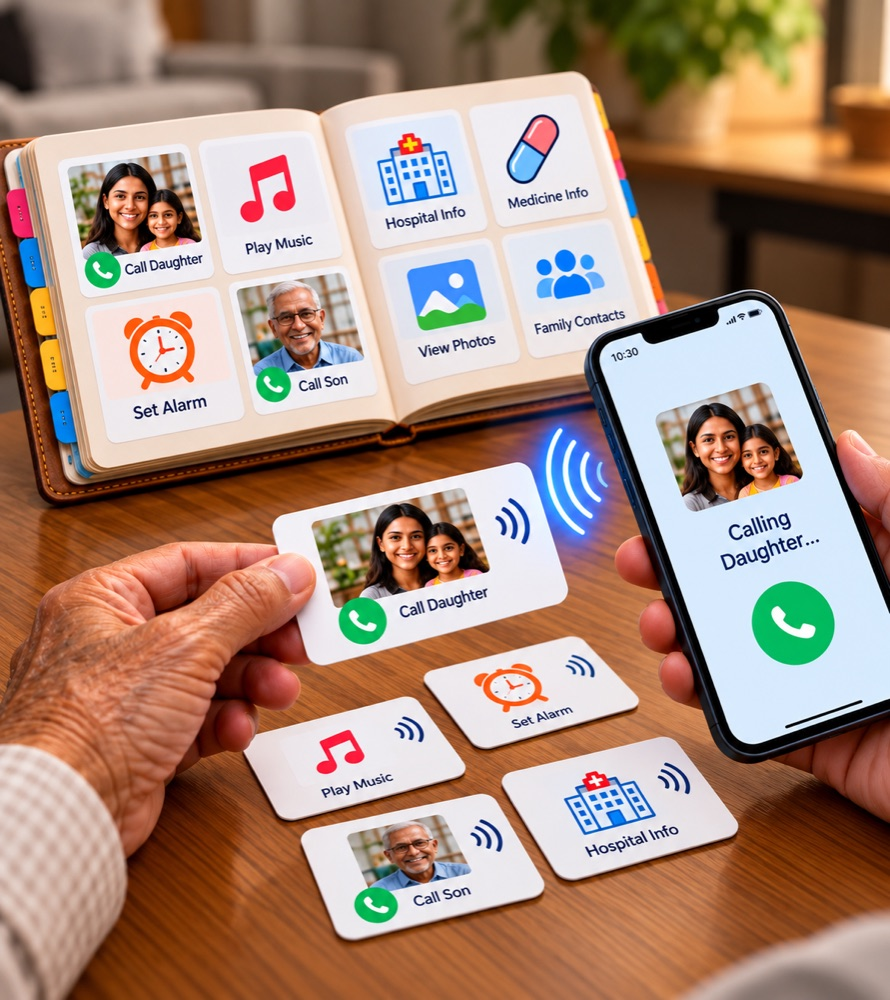
Older adults struggle with everyday smartphone tasks that require multiple steps, such as calling family, playing music, setting alarms, or finding important information. Navigating apps and unfamiliar interfaces can make these simple tasks frustrating.
NFC Memory Book / Cards uses familiar photos, icons, and physical cards to provide direct access to digital actions. Users simply bring their phone close to a page or card to trigger an action—without navigating through multiple apps or menus.
- Simple interaction
- Familiar and meaningful
- Fewer steps
- Multiple actions
- Personalized
- Greater independence
How Physical + Digital + user elements works
Interaction model
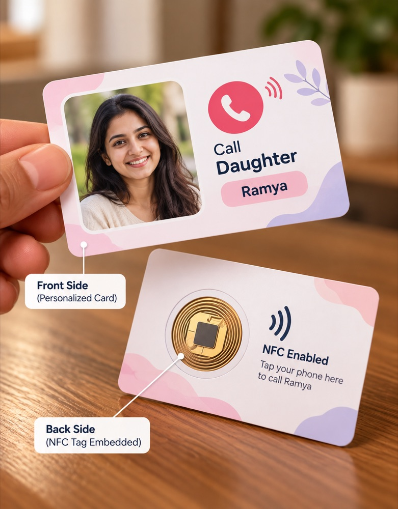
Physical Card
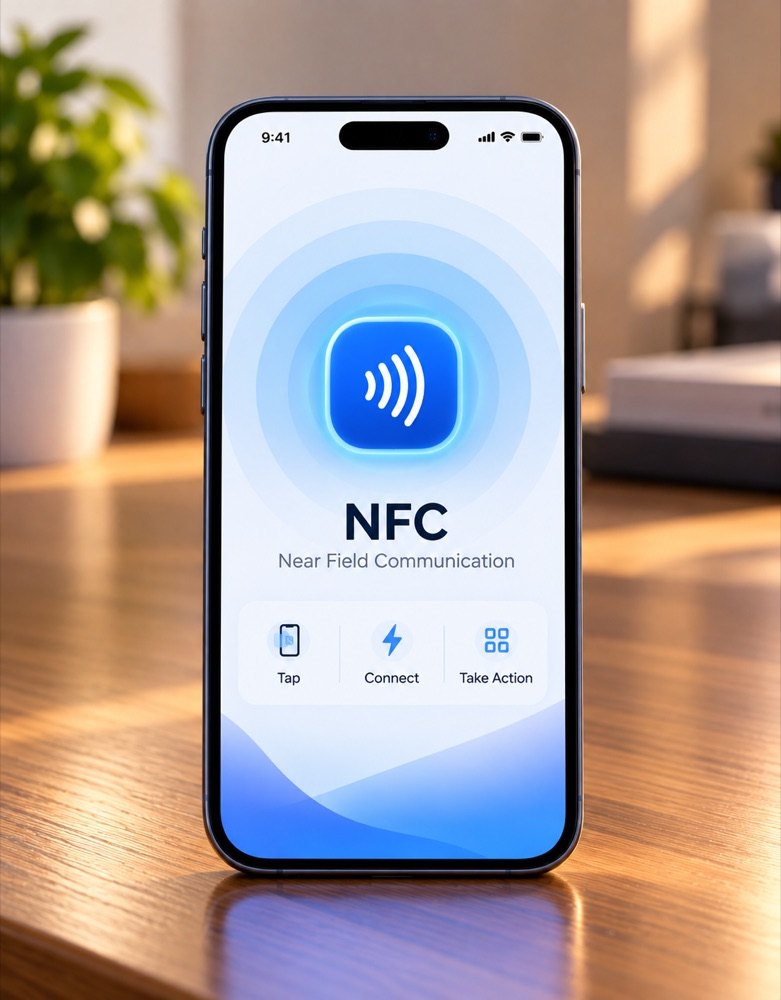
Smartphone
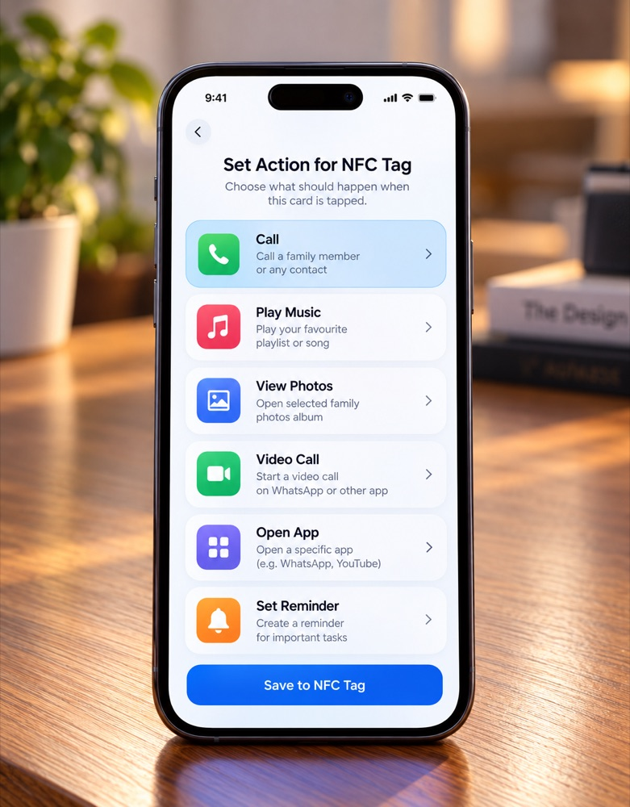
Predefined Action
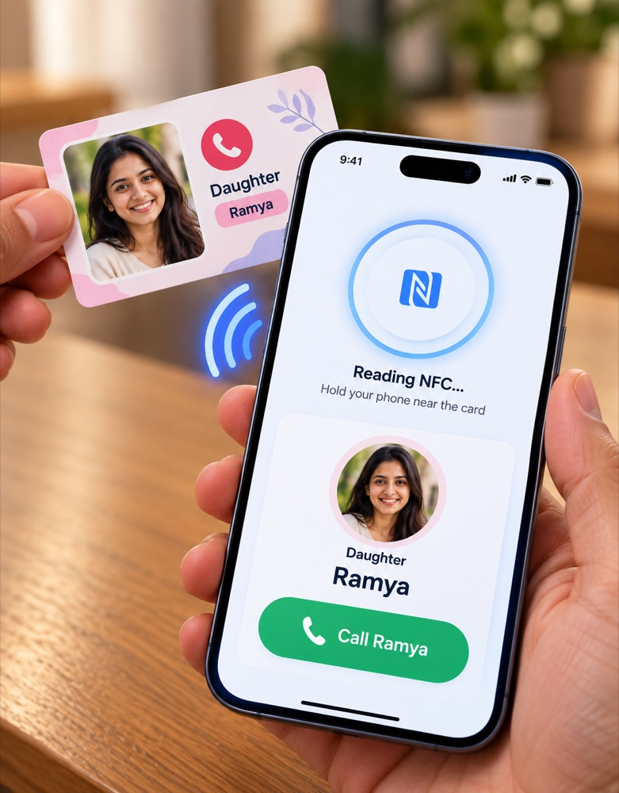
Tap to card
trigger different everyday actions
Interaction Examples
Play Music
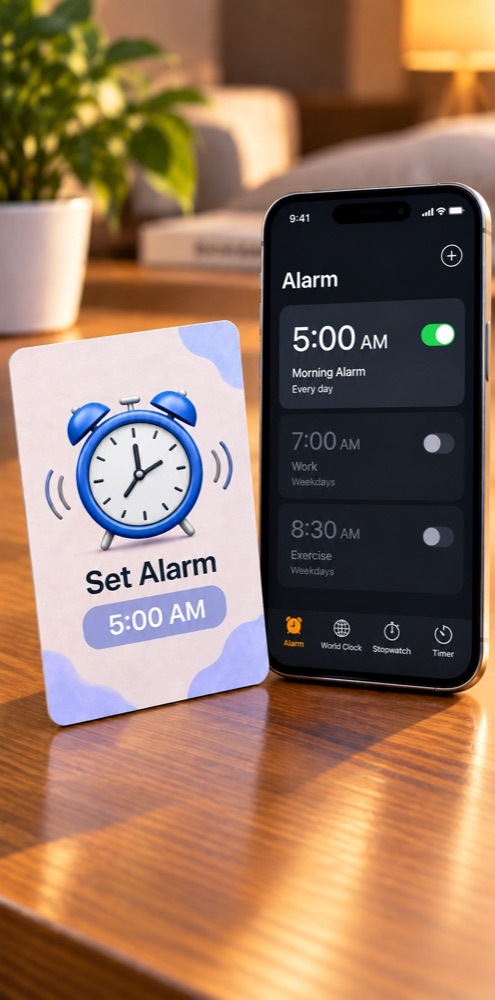
Set Alarm
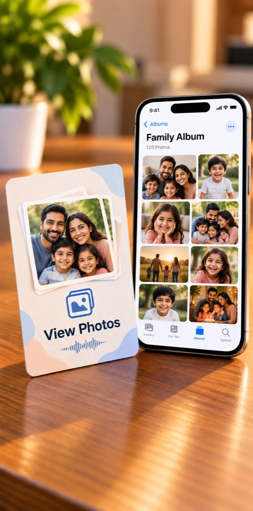
View Photos
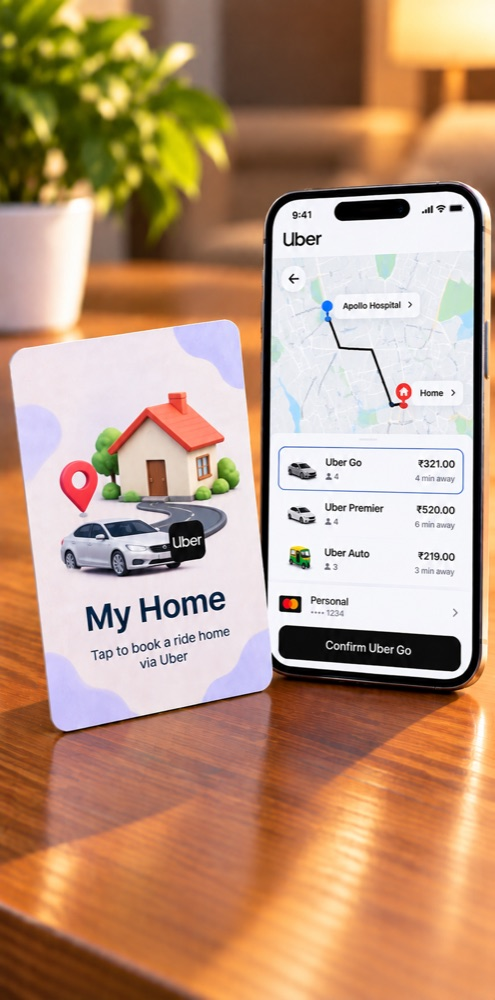
Book cab to home
Simplifying everyday calls with NFC
User flow
flow → Unlock
phone → Find
whatsApp → Open
whatsApp → Find
Ramya's chat → Open
chat → Tap
Video → Find
Video call → Video call
starts 7 + steps
Requires app navigation & searching
Flow → Tap phone
on NFC card → NFC
detected → Predefined action
Video call Ramya 1 Tap → Video call
starts
No App navigation, no searching
Making a call shouldn't require multiple steps. NFC simplifies the experience by turning a familiar smartphone task into a single tap—helping older adults complete everyday actions more easily and independently.
how to setup NFC
NFC card setup flow
card settings → Choose
Action → Select Contact
Arushi → link
NFC Tag → SaveCard
in the NFC app → NFC Card
Ready
Real time scenario of NFC
Demonstration video
Let's check
Heading
Everyday phone actions can be difficult when users have to navigate multiple screens, apps, and menus.
Users set up an action once and link it to an NFC card. Tap the card to go directly where they need to be.
From calling family to playing music or opening directions, familiar cards turn complex phone tasks into simple physical interactions.